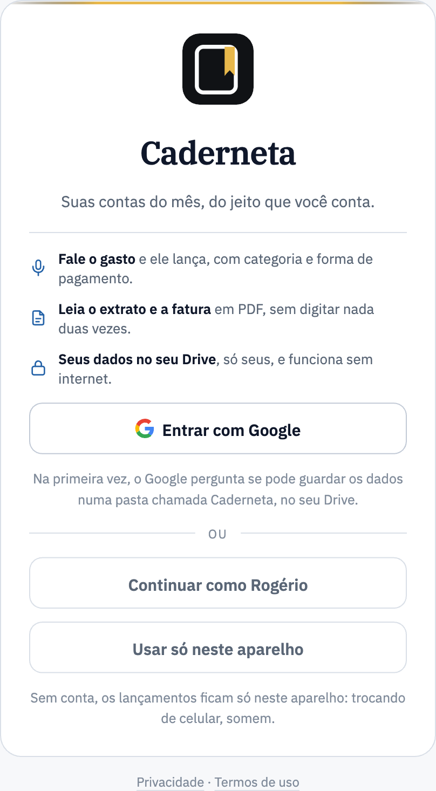
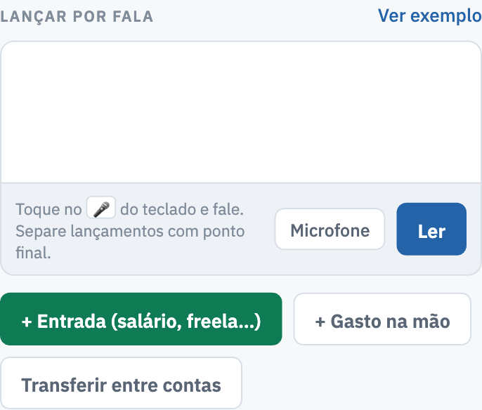
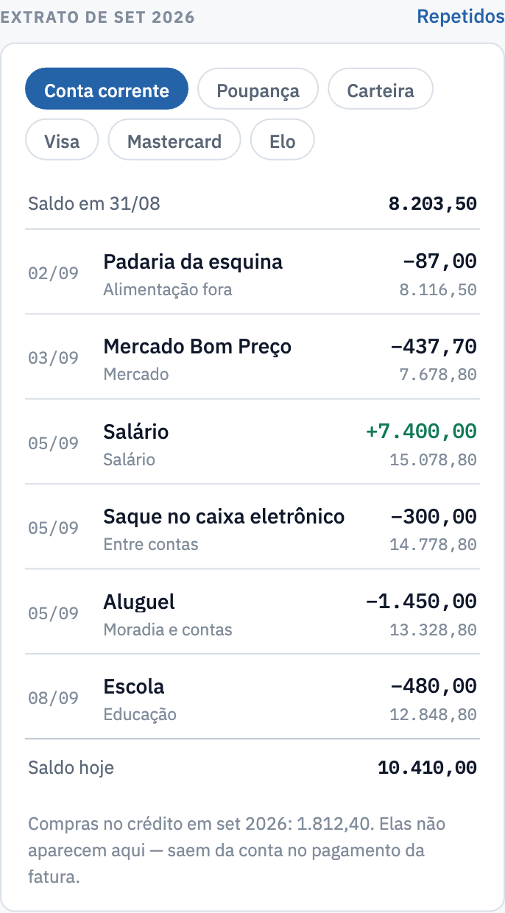
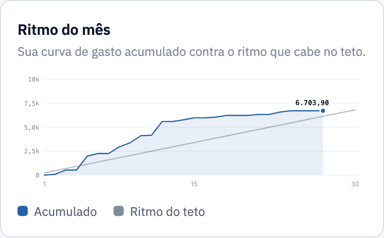
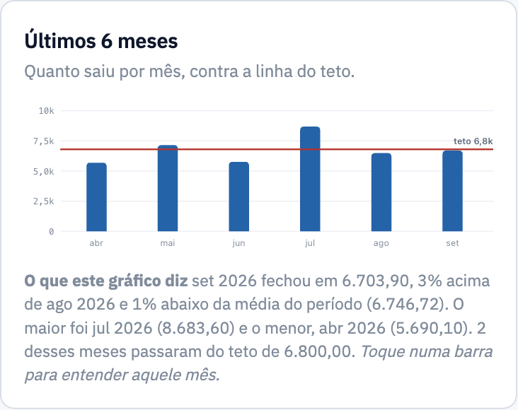
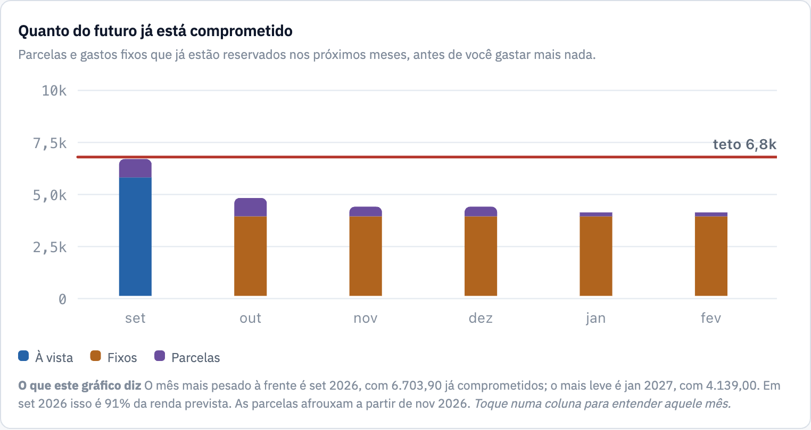
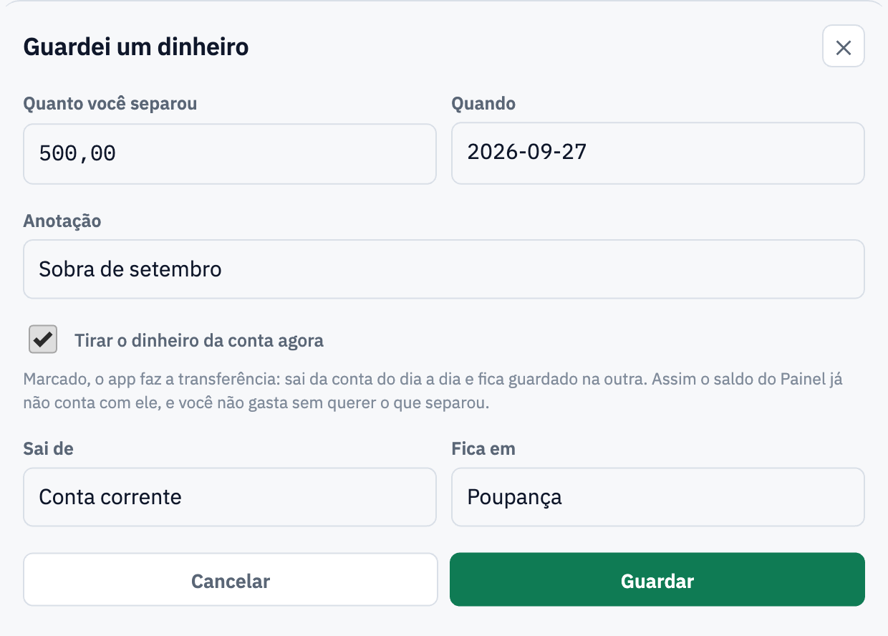
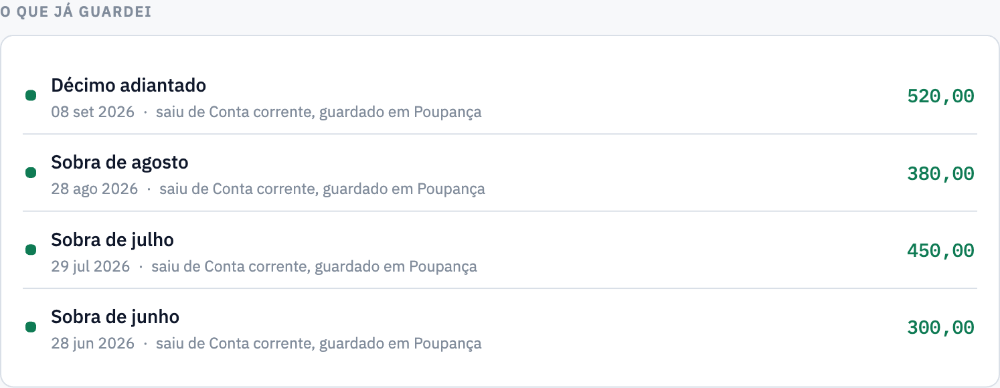

Manual da Caderneta — feito para imprimir em A4Baixar o PDF
Caderneta
suas contas, do seu jeito
Manual de uso
Controle de gastos por fala, leitura de extratos e faturas em PDF, cartões e faturas, dívidas com quitação, plano para juntar dinheiro e o método 50-30-20.
Edição de outubro de 2026 · aplica-se à versão caderneta-v85 em diante
Desenvolvimento
Rogério Bittencourt
github.com/rgbittencourt · programado com o Claude, da Anthropic
Como este manual foi feito
Todas as telas deste manual usam dados inventados, só para ilustrar. Nenhum valor, nome de loja ou saldo real aparece aqui.
1. Começar
Instalar
iPhone e iPad: abra o endereço no Safari → botão Compartilhar → Adicionar à Tela de Início.
Android: abra no Chrome → Instalar app.
Mac e Windows: no Chrome ou Edge, use o ícone de instalar na barra de endereço. No Safari: Arquivo → Adicionar ao Dock.
Como reconhecer o ícone.
Depois de instalado, o app aparece como uma caderneta de capa preta com a fita marcadora dourada, com o nome Caderneta embaixo — o mesmo desenho da capa deste manual. É esse quadradinho preto que você procura na tela de início do celular e na aba do navegador — e ele aparece também dentro do app, ao lado do nome, no alto do menu.
Entrar

A primeira tela: a marca, o que o app faz em três linhas e os dois caminhos — entrar com o Google, que guarda tudo no seu Drive, ou usar só neste aparelho.
Toque em Entrar com Google e deixe marcada a permissão do Google Drive. Os seus dados ficam em dois lugares: no aparelho e numa pasta chamada Caderneta, no seu Drive. Cada pessoa da família entra com a própria conta e só enxerga os próprios dados.
Também dá para usar só neste aparelho, sem conta. Nesse caso os dados não vão para o Drive e não passam para outro celular.
Atualizar
Quando há versão nova, o app mostra embaixo da tela Nova versão da Caderneta · Atualizar agora — a barra fica até você tocar, e volta a aparecer na próxima vez que abrir o app, se você não tiver atualizado. Para saber qual versão está em uso, vá em Ajustes → Dados → Versão do app; o botão Procurar atualização confere na hora e diz Você está na versão mais nova quando não há nada a fazer.
2. As abas
No computador, o menu fica na lateral: Painel, Lançar, Mês, Contas, Futuro, Meta, Análises, Consulta, Ajustes e Ajuda. No alto, a marca com a sua assinatura embaixo — toque nela para abrir a sua conta e os botões de sair.No celular, as abas ficam embaixo. Futuro, Meta, Análises e Ajustes estão no botão Mais. No computador, tudo aparece no menu lateral.
Aba
Para que serve
Painel
O retrato do momento: dinheiro no banco, cartões, teto do mês e próximos vencimentos.
Lançar
Tudo o que entra no app: fala, lançamento na mão, importar extrato, importar fatura, cadastrar dívidas.
Mês
Os lançamentos do mês, dia a dia, e as contas a pagar.
Contas
Só para ver: saldo de cada conta, cartões e o extrato mês a mês.
Futuro
O que já está comprometido nos próximos meses.
Meta
Meta de poupança e o método 50-30-20.
Análises
Diagnóstico do mês, compras parceladas, gastos por cartão e dívidas.
Ajustes
Saldos, renda, cartões, categorias, gastos fixos e dados.

No celular tudo fica numa coluna só, com os botões grandes. Esta é a aba Lançar.

O extrato do mês no telefone: cada linha traz o que foi, como foi pago e o valor.
3. Painel
O Painel começa pelo mais básico: quanto você tem no banco e quanto já está lançado em cada cartão.
À esquerda, o total somando as contas, com uma linha para cada uma. O dinheiro da Carteira aparece na lista, mas fora do total, porque não está no banco. À direita, a fatura do mês de cada cartão, o total em aberto (contando as parcelas futuras) e o limite livre. Tocando em qualquer linha, você vai direto ao extrato daquela conta ou cartão.Disponível até o fim do mês é o teto menos o que já foi gasto e o que está comprometido (parcelas e fixos ainda por lançar). Ao lado, quatro números do mês: gasto, entrada, saldo de hoje e saldo previsto para o último dia.Próximos vencimentos reúne o que vence em até dez dias e o que já passou: gastos fixos, parcelas de dívida e faturas.Onde meu dinheiro está indo: as categorias do mês em ordem de valor. O traço cinza é o limite que você definiu para a categoria, em Ajustes. Embaixo do gráfico, O que este gráfico diz lê os seus números em uma frase.
Todo gráfico vem explicado — e responde ao toque.
Abaixo de cada gráfico há um parágrafo O que este gráfico diz, escrito com os seus próprios números: qual categoria pesa mais, quanto o mês subiu ou caiu, quantos meses passaram do teto, quando as parcelas afrouxam. E tocando (ou clicando) em qualquer barra, ponto ou fatia, o app abre a leitura daquele dado: o valor, a comparação com o mês anterior e com a média, a posição em relação ao teto e o que muda dali para a frente.

Ritmo do mês: a curva azul é o seu gasto acumulado, dia a dia; a reta cinza é o ritmo que cabe no teto. Tocando num dia, ele diz quanto você tinha gasto até ali, se estava à frente ou dentro do ritmo, quanto do teto sobrava por dia e em quanto o mês fecharia nesse passo.

Últimos 6 meses: quanto saiu em cada mês, com a linha vermelha do teto. Tocando numa barra, o app compara aquele mês com o anterior, com a média do período e com o teto, e diz se ele fechou no vermelho ou sobrou dinheiro.

Quanto do futuro já está comprometido: parcelas, gastos fixos e gastos já lançados nos próximos meses. Tocando numa coluna, ele diz qual pedaço pesa mais naquele mês, quanto sobra da renda prevista e em que mês as parcelas começam a cair.
4. Lançar por fala
Na aba Lançar dá para tocar no 🎤 do teclado e falar, ou escrever. Separe vários lançamentos com ponto final. Ao lado ficam os botões para lançar na mão: entrada, gasto e transferência entre contas.
Segure para falar
Em todas as abas, no canto de baixo da tela, fica o botão redondo do microfone. Segure o botão e fale; enquanto você segura, ele fica vermelho e mostra o que está ouvindo. Solte quando terminar: o app abre Confira antes de salvar com o que entendeu, para você conferir e salvar. Um toque rápido não grava — é preciso segurar. Se o navegador não reconhecer fala, o botão leva para a aba Lançar, onde o 🎤 do teclado funciona igual.
O que ele entende
Parte
Como falar
Valor
"vinte e três reais", "R$ 23", "35 reais e 90 centavos", "trinta e cinco e noventa", "R$ 35,90", "um real e cinquenta", "R$ 10 mil", "2 mil e 500"
Data
hoje, ontem, anteontem, amanhã, "sábado", "na segunda" (o último que passou), "próxima segunda", "dia 5", "dia primeiro", "5 de outubro", "5/10". Com verbo no passado (paguei, gastei), "dia 30" dito no começo do mês é o que passou; sem verbo, é o próximo — é assim que se agenda.
"caiu o salário", "recebi", "estorno", "rendimento"
Para quem
"pra o João" — em Pix e transferência
Categoria
sozinho, pela palavra que aparece primeiro: mercado, farmácia, posto…
"Vinte e três reais, almoço no restaurante, cartão de crédito Visa." "Trezentos e oitenta reais na loja de ferramentas, em três vezes no Mastercard." "Caiu o salário, três mil reais." "Anteontem paguei R$ 35,90 de farmácia no débito." "Saquei duzentos reais." — não é gasto: sai da conta e vai para a Carteira.
Confira antes de salvar
O que a fala gerou aparece na lista Confira antes de salvar. Ali dá para mudar valor, descrição, categoria, forma de pagamento, data e parcelas — e só então salvar.
5. Agendar pagamentos
Diga quando e o lançamento já fica marcado para o dia certo. Serve para pagamento, depósito e transferência.
"Mil e duzentos reais, aluguel, dia 10." "Quinhentos reais, internet, amanhã." "Trezentos reais, escola, dia 5 de outubro."
Também vale "10/10", "hoje" e "ontem".
Sem dizer o mês, "dia 10" é o próximo dia 10.
Até três dias para trás, ele entende que é deste mês — quem fala "dia 23" no dia 25 está lançando o que já aconteceu.
O lançamento aparece com a marca agendado até chegar o dia, e já entra no saldo previsto do mês.
6. Importar o extrato da conta
Aba Lançar → Importar extrato da conta: escolha a conta e o arquivo. O PDF baixado do app do banco é o que lê melhor; foto, OFX e CSV também servem.
O que o app faz sozinho
Lê cada lançamento com o nome certo e separa entradas de saídas.
Pagamento de fatura ("Pagto cartão crédito") vira pagamento: sai da conta, mas não conta como gasto — as compras já vieram da fatura.
Saque vira transferência para a Carteira.
Aplicação automática do saldo (no Banco do Brasil, o Rende Fácil) vira transferência para uma conta própria, criada na primeira importação. Assim a conta corrente fica igual ao saldo impresso no extrato.
Rendimento: o extrato não traz essa linha — o dinheiro volta escondido dentro dos resgates. Quando o banco devolve mais do que tirou, o app pergunta se pode lançar a diferença como Rendimentos.
Estorno de débito: quando o banco desfaz uma cobrança que ele mesmo lançou (não havia limite na hora) e cobra de novo no dia seguinte, o par se anula e os dois ficam de fora. O app diz quantos encontrou. Sem isso, um pagamento de fatura desfeito entrava como se a fatura tivesse sido paga duas vezes.
Conferência do saldo: no fim, ele compara o saldo impresso pelo banco com o que calculou e pergunta se pode acertar. Vale o saldo da conta, o que vem com a data — e não o Saldo do quadro Informações Adicionais, que nos extratos parciais já soma o dinheiro da aplicação automática.
Extrato parcial engana o acerto
Num extrato de meio de mês, a conta pode estar negativa e o quadro do fim da página mostrar um saldo positivo bem maior, porque soma o dinheiro que está na aplicação automática. Versões antigas ofereciam um acerto com esse número. Se você aceitou um acerto desses, vá em Ajustes → Dados → Revisar: a lista Acertos de saldo tem botão para apagar.
O acerto de saldo ainda é necessário?
Importe de novo o extrato do mês do acerto. Nada entra duas vezes, e no fim a tela Conferir o saldo da conta mostra a conta com e sem os acertos de saldo. Se sem eles a conta bate com o banco, ela diz é o acerto que está sobrando e oferece Apagar o acerto; se o acerto é necessário, diz que pode deixar.
Importe do mês mais antigo para o mais novo
O desconto do consignado anda pelos salários já lançados. Fora de ordem, ele não fecha.
7. Importar a fatura do cartão
Aba Lançar → Importar fatura do cartão, canhoto ou boleto: escolha o tipo, o cartão e o arquivo. O mês não se escolhe — vem da própria fatura.
O que o app faz sozinho
A fatura tem o nome do mês em que vence, como o banco faz, e a data do vencimento aparece entre parênteses: a do Mastercard que fecha em 23/09 e vence em 05/10 é a fatura de out (05/10); a do Visa que fecha em 03/10 e vence em 16/10 também é de out (16/10). Com o mês de cima em outubro, cada cartão mostra a fatura que vence em outubro.
Aprende o dia do fechamento do cartão e reconhece o cartão pelo que está escrito na fatura.
Saldo da fatura anterior e pagamento em débito em conta não são compras: se um anula o outro, a fatura anterior foi paga; o que faltou pagar entra como Saldo da fatura anterior. Quando a anterior fechou a favor de você (um estorno maior que as compras), o crédito entra como Saldo a favor da fatura anterior e vai abatendo as faturas seguintes, como o banco faz, até acabar.
Parcelas: a parcela 03/10 já reserva as seguintes. Se o banco muda os centavos de uma parcela para outra, o app reconhece e acerta pelo valor da fatura; se uma parcela prevista não veio, ele empurra para a fatura seguinte.
Juros, IOF e tarifas entram como lançamento daquela fatura — inclusive os de nome comprido, como IOF PF PGTO TIT/CONV/TRIB e JUROS PAGAMENTO CONVENIOS, que versões antigas confundiam com o pagamento da fatura e deixavam de fora.
Duas compras iguais na mesma fatura (dois cafés iguais no mesmo dia, duas parcelas 2/3 iguais da mesma loja) são duas: cada parcela que o app tinha reservado responde por uma linha só, e o que sobrar entra como nova. Quando são compras à vista, ele pergunta na conferência.
O app confere a própria leitura com o banco
Toda fatura do banco traz impresso o Total da fatura. A Caderneta usa esse número duas vezes:
logo depois de ler, a linha embaixo da conferência diz ✓ a leitura confere com o total impresso pelo banco — ou ⚠, com a diferença: aí não salve, e mande a amostra sem dados;
depois de salvar, ela soma a fatura como ficou no app, com o que já estava lançado antes, e abre uma janela — A fatura fecha com o banco (✓) ou A fatura não fechou com o banco (⚠, com os dois valores e o botão Abrir a Revisão). A janela fica até você tocar em Ok, e aparece também quando não havia nada novo para lançar.
O total fica guardado, e a Revisão confere aquela fatura daí em diante, paga ou não.
Reimportar a mesma fatura conserta, e não duplica
Quando uma fatura não fecha com a do banco, quase sempre é leitura antiga. Importar o mesmo PDF de novo deixa entrar só o que falta — e as linhas que a própria fatura já tinha lançado o app reconhece sozinho, sem perguntar (Já lançado por esta mesma fatura):
compra no crédito nunca é confundida com uma compra no débito do extrato, nem com uma de outra fatura do banco;
cada lançamento guardado responde por uma linha só, então duas compras iguais no mesmo dia continuam sendo duas;
estorno é reconhecido como estorno (fica guardado com valor negativo, porque abate a fatura) e não entra outra vez;
a parcela que faltava entra na compra parcelada que já está no app — sem abrir uma compra nova nem repetir as parcelas seguintes; e duas parcelas iguais na mesma fatura (duas peças compradas juntas) nunca entram na mesma compra: a segunda vira compra nova;
a parcela reservada só muda de fatura para uma vizinha, quando o banco cobrou num mês diferente do previsto: ela nunca é puxada de uma fatura de meses atrás.
A pergunta Isto já está lançado? ficou para o que você lançou por fala ou à mão: aí sim é você quem sabe.
Fatura ficou dobrada? Apague e importe de novo
Se uma fatura do app ficou maior que a do banco (por exemplo, por responder São diferentes a linhas que eram as mesmas), vá em Ajustes → Dados → Revisar: cada fatura que não bate aparece numa linha, da mais antiga para a mais nova, com o botão Apagar fatura (dois toques). Apague a primeira, importe o PDF dela de novo e repita até a lista esvaziar. O pagamento não é apagado. Se a lista passar para os meses seguintes do mesmo cartão, é normal: apagar uma fatura refaz as parcelas das seguintes.
A fatura do app fecha com a do banco
As faturas e os extratos de 2026 do autor, de janeiro a outubro, fecham com o Total da fatura e com o saldo impressos pelo banco, centavo por centavo. Quando uma fatura não fechar, é leitura antiga: importe o mesmo PDF de novo.
A regra de ouro do crédito
A compra no cartão conta como gasto no mês em que foi feita e entra nas análises e nos gráficos — mas não sai da conta corrente. O dinheiro só sai quando a fatura é paga.
8. Boleto e canhoto
Boleto: fotografe o código de barras ou digite a linha digitável. Em Quando pagar, escolha No vencimento (agendar) — o padrão — ou Hoje (já paguei).
Canhoto ou cupom: em Pago com, diga como pagou (débito, Pix, boleto ou um cartão). Essa escolha vale para o documento inteiro e pode ser mudada linha a linha na conferência.
Foto: uma página por vez, com boa luz e o papel reto. Depois da primeira, aparece o botão Fotografar mais uma página.
9. A conferência: nada entra duas vezes
Pagar um boleto com o cartão não é pagar a fatura.
Na fatura, uma compra pode se chamar "PAGTO DE TITULO 01/03" — é um boleto pago com o cartão, parcelado, e conta como gasto normal. Isso é diferente da baixa da fatura anterior, que aparece no topo como crédito (valor negativo) ou com o nome de onde saiu: "Pagamentos/Créditos", "Pagamento em débito em conta". O app distingue os dois pelo sinal e pelo texto; se uma fatura importada ficou menor que a do banco, importe o mesmo PDF de novo depois de atualizar: a conferência deixa entrar só o que faltava.
Compra em dólar: a linha de câmbio não é cobrança.
Embaixo de uma compra internacional, a fatura do banco imprime duas linhas de apoio — "*** 12,50 DOLAR AMERICANO" (o valor na moeda de origem) e "Cotação do Dólar de 10/03: R$ 5,4000". Nenhuma das duas é um gasto: o valor em reais já está na linha da compra. O app ignora as duas. Se você importou faturas em versões anteriores, use Ajustes → Dados → Revisão para achar e apagar o que entrou por engano.
Quando o banco já descontou e a fatura continua pedindo pagamento.Pagar fatura nunca desconta sozinho: ele abre uma tela. Se o app encontrar o pagamento que veio do extrato, mostra "Esse pagamento já parece ter saído da conta" e o botão É este pagamento — é esse que liga os dois, deixando a fatura paga sem tirar dinheiro de novo. Pagar mesmo assim é que cria um pagamento novo. Se o aviso não aparecer, o pagamento está ligado a outro cartão: abra o extrato da conta, toque nele e corrija De qual cartão e Abate a fatura de.
Pagamento de fatura vindo do extrato.
O extrato do banco traz o pagamento com o nome do cartão ("Pagto cartão crédito · Elo Grafite"), e o app liga esse pagamento à fatura certa — mesmo que o cartão tenha outro nome aqui dentro. Quando o extrato não disser de qual cartão é, o lançamento fica marcado como cartão a confirmar: você escolhe o cartão na conferência, ou o app liga sozinho assim que a fatura daquele valor for importada. O app nunca oferece o pagamento de um cartão como se fosse de outro.
Depois de ler um documento, o app resume o que encontrou: quantos lançamentos, quantos parecem já lançados, o que ficou de fora e o saldo que o banco informa.Cada linha pode ser ajustada antes de salvar. O que já está lançado vem desmarcado, com os dois lado a lado e os botões É o mesmo — não lançar e São diferentes — lançar.
Como ele reconhece o que já foi lançado
Mesmo tipo (gasto, entrada, pagamento de fatura, entre contas).
Mesmo valor, com tolerância de um centavo.
Data com folga de três dias — seis, no pagamento de fatura.
No crédito, reconhece mesmo que você tenha dito o cartão errado, quando a descrição bate.
Parcelas têm regra própria: a parcela 02/06 é reconhecida mesmo com os centavos diferentes.
Depois de salvar, ainda existe o Repetidos, no alto do extrato (aba Contas): ele procura dois lançamentos iguais já gravados, mostra de cada lado qual fatura abate e de onde veio, e deixa você escolher — São diferentes, Apagar o primeiro ou Apagar o segundo.
10. Aba Mês
Contas a pagar reúne, em ordem de data, os gastos fixos, as parcelas de dívida, o consignado que sai do salário e a fatura de cada cartão. Lançar dá baixa num gasto fixo; Pagar abre o pagamento da fatura.
Abaixo ficam os lançamentos do mês, dia a dia. Cada gasto mostra a forma de pagamento e a marca crédito · não sai da conta ou débito. Tocando em qualquer linha, dá para corrigir ou excluir.
11. Aba Contas
Onde o dinheiro está: o saldo de hoje de cada conta. Toque numa conta para ver o extrato dela.Cada cartão mostra a fatura do mês, o limite usado contando as parcelas futuras e o que está livre. Pagar fatura lança o pagamento; Ver fatura abre a lista de compras daquela fatura.O extrato da conta, como o do banco: saldo anterior, cada movimento com o saldo depois dele e o saldo no fim do mês. As compras no crédito não aparecem aqui — o rodapé lembra quanto foi no crédito naquele mês.No cartão, a fatura daquele mês: cada compra, o pagamento e o que falta pagar. Compras do mês anterior podem aparecer aqui, porque o que manda é o fechamento.
12. Saldos e acertos
Ajustes → Saldo de cada conta e cartão: cada conta tem Saldo inicial, Corrigir saldo e Editar; cada cartão tem Corrigir fatura.Saldo inicial: a data do primeiro extrato que você vai importar e o saldo anterior impresso nele. Lançamentos antes dessa data não contam no saldo.Corrigir saldo: escolha o mês e digite o saldo que o banco mostrava no último dia dele (no mês atual, o de hoje). A diferença vira um Acerto de saldo naquele dia — assim o mês seguinte já começa certo e os anteriores não mudam. O acerto não conta como gasto nem como renda, aparece no extrato e pode ser apagado.Corrigir fatura: digite o total que o banco cobrou naquela fatura — compras, tarifas e encargos, sem o saldo anterior e sem pagamentos. A diferença entra como Acerto da fatura. O botão vermelho Apagar esta fatura (dois toques) tira os lançamentos daquela fatura e, de um parcelado, aquela parcela e as seguintes — sem tocar no pagamento. É o caminho para importar de novo uma fatura que entrou errada.
Banco do Brasil
Ao comparar o saldo, some a conta corrente com o BB Rende Fácil: para o banco são dois lugares, mas o dinheiro é o mesmo.
13. Carteira e dinheiro em espécie
O saque tira da conta corrente e põe na Carteira. O gasto conta quando o dinheiro sai da carteira, e há dois jeitos:
Lançando cada gasto: "trinta reais, feira, em dinheiro".
De uma vez: Ajustes → Carteira → Corrigir saldo, contando o que sobrou — ou tocando em Não sobrou nada: zerar. A diferença entra como gasto em dinheiro, na categoria Outros, e depois dá para trocar a categoria tocando no lançamento.
14. Cartões de crédito
Qual cartão usar hoje
No alto do Painel e da aba Lançar, o app mostra qual cartão dá mais prazo para a compra de hoje — quanto mais tempo até o dinheiro sair da conta, melhor.
A conta é simples: a compra de hoje entra na fatura que ainda vai fechar, e essa fatura vence no dia do vencimento — no mês seguinte, quando o vencimento vem antes do fechamento. Abaixo, os outros cartões em ordem, com o prazo de cada um e o limite livre.
Para funcionar, informe as datas
Em Ajustes → Formas de pagamento, cada cartão precisa do dia de fechamento e do dia de vencimento. Ao importar uma fatura, o app aprende essas datas sozinho.
As datas mudam todo mês
O banco ajusta o fechamento pelos dias úteis: no Ourocard, por exemplo, a fatura fechou no dia 6 em janeiro e no dia 4 em fevereiro. Por isso, cada fatura traz impressas duas datas que o app guarda ao importar:
Fechamento da próxima fatura — a data exata do próximo ciclo. Enquanto ela não chega, é ela que vale no cálculo, e o app avisa que aquela data veio da fatura.
Melhor data de compra — o dia em que comprar rende o prazo máximo. Ela aparece junto com a recomendação.
A fatura que fecha hoje já traz o fechamento do mês seguinte: importando cada fatura quando ela sai, você fica sempre um ciclo à frente. Sem essas datas, o app estima pelo dia do mês — o erro é de um ou dois dias.
Como o app trata o crédito
A compra conta no mês em que foi feita. A fatura em que ela será cobrada depende do dia do fechamento do cartão.
Pagar fatura: antes de lançar, o app procura um pagamento do mesmo valor que já tenha saído da conta e oferece É este pagamento — assim o dinheiro não sai duas vezes.
Fatura paga em pedaços: quando o banco debita em partes, o app soma. Enquanto falta, mostra pagamento parcial de X em N vezes; quando fecha, paga em N pagamentos.
Fatura prevista: enquanto você não importa a fatura daquele mês, o valor é só a previsão pelas compras e parcelas conhecidas — ela aparece como prevista, nunca como atrasada.
O quadro de cada cartão, em Contas
No alto, a fatura do mês escolhido na barra de cima, com fechamento e vencimento.
Se uma fatura de mês anterior ainda não tem pagamento no app, aparece um aviso com o valor, o vencimento e o botão Pagar só para ela. Se o banco já debitou, ela fica paga sozinha quando você importar o extrato.
A pagar no total: tudo o que ainda vai sair da conta por aquele cartão — as faturas sem pagamento e as parcelas dos próximos meses. A linha de baixo diz quanto disso é de parcelas.
Livre: o limite menos o que está a pagar. Quando o banco divide um limite só entre os cartões (no Banco do Brasil a fatura diz Limite único), o app lê isso na fatura e desconta o que está a pagar em todos eles — por isso o livre é o mesmo nos três. Dá para marcar à mão na ficha do cartão, em Limite único, dividido com outros cartões.
15. Dívidas e quitação
O cadastro fica no fim da aba Lançar, junto com as importações. Cada dívida mostra a parcela, em qual você está e quanto falta para quitar hoje.No consignado, informe o valor do empréstimo, a data em que caiu, a conta, o número de parcelas, o valor da parcela, em que mês começou o desconto no salário e quantas já foram descontadas antes deste mês. O banco costuma começar a descontar meses depois de liberar o dinheiro.
O empréstimo entra no saldo da conta, mas não conta como renda. Se o dinheiro já veio no extrato, desmarque Lançar o depósito no cadastro. No extrato do Banco do Brasil ele aparece como Contr BB Consig em Folha, e o app o lança como Empréstimo recebido; o que entrou antes como Salário a Revisão corrige com um toque.
Os números estão no contracheque: a linha do empréstimo traz o valor da parcela e o prazo. Em Primeiro desconto no salário de, use o mês em que caiu o primeiro salário já descontado; em Já descontadas antes deste mês, quantas parcelas já saíram.
A parcela sai do salário: conta como gasto, mas não sai da conta de novo — a renda já veio descontada.
Nunca dois descontos no mesmo mês.
Para empréstimo ou financiamento pago por boleto ou débito, diga Já estou pagando ("parcela 4 de 12") ou Ainda vou começar, com a data da primeira. A parcela entra nos gastos fixos até a última.
Quitar antes: mostra quanto falta para quitar hoje, quanto pagar por mês para terminar num mês escolhido, quanto é a mais que a parcela e quanto você economiza de juros — e ainda o saldo para quitar mês a mês.Na aba Análises, o acompanhamento: saldo devedor, quanto sai por mês, juros que ainda vai pagar e quando tudo estará quitado.
16. Salário e renda
Em Ajustes → Meta do mês você informa a renda líquida, a conta onde o salário cai e o teto de gastos.
A renda entra sozinha no primeiro dia útil do mês, pulando fim de semana e feriado nacional.
Em mês com parcela de consignado, ela entra já descontada, e a parcela aparece em Dívidas.
Se você lançar o salário à mão, ou ele vier no extrato, o app não lança de novo.
Teve aumento? Mude o valor e o app pergunta a partir de que mês vale. Meses anteriores e salários já lançados não mudam.
17. Futuro e Meta
Futuro: o que já está comprometido nos próximos meses — parcelas, gastos fixos e dívidas — antes de você gastar mais nada.Meta: a meta de poupança e o método 50-30-20, que divide a renda em Necessidades, Desejos e Futuro. O anel de fora é a meta; o de dentro, para onde a renda foi. Necessidades e Desejos são tetos; Futuro é piso.
É na aba Meta que você registra o que separou: o botão Guardei um dinheiro.

Diga quanto separou e quando. Com Tirar o dinheiro da conta agora marcado — o padrão, quando você tem mais de uma conta —, o app faz a transferência: sai da conta do dia a dia e fica guardado na outra (Poupança, por exemplo). O saldo do Painel já não conta com esse dinheiro, e ele não vira gasto por engano. Desmarque se quiser só anotar, sem mexer nas contas — quando o dinheiro já foi para outro banco, por exemplo.

Cada valor separado aparece em O que já guardei, dizendo de que conta saiu e onde ficou. Tocando na linha dá para corrigir o valor ou a data — a transferência acompanha — ou excluir, e aí o dinheiro volta para a conta.
Separar não é gastar.
A transferência não entra como gasto nem no teto do mês nem no 50-30-20: é o mesmo dinheiro, só que em outra conta. Ele continua aparecendo no Painel, em Onde meu dinheiro está, na linha da conta em que foi guardado.
18. Plano para juntar um montante
Na aba Meta, em Juntar um montante até uma data, você diz quanto quer juntar e até quando. O app olha a sua renda, tudo o que já está comprometido (gastos fixos, parcelas em andamento e parcelas de dívida) e os seus gastos soltos dos últimos meses fechados, e monta o plano.
O número grande é quanto guardar por mês, em média — ou, quando o alvo não cabe no prazo, o máximo que dá. A barra mostra o que você já tem (verde cheio) e a projeção até a data (verde claro). O selo dá o veredito, e ao lado ficam as contas do período inteiro.
São quatro vereditos possíveis:
Selo
O que quer dizer
Dá, sem cortar nada
O que já sobra por mês cobre o alvo. É só separar o dinheiro assim que entrar.
Dá, com alguns cortes
Falta um tanto por mês — e a lista Onde cortar mostra exatamente de onde tirar.
Dá uma parte
Nem cortando tudo o que é realista o alvo cabe no prazo. Ele diz quanto dá para juntar, em que porcentagem do alvo isso fica, por volta de que data o valor cheio sairia e quanto de renda a mais resolveria.
Hoje não fecha
O que entra não cobre nem o que já está comprometido. Os cortes são por onde começar.
Cada mês é calculado separado: o que entra, o que já está comprometido naquele mês e o gasto do dia a dia. Por isso um mês pode aguentar bem mais que o outro — e quando uma parcela ou uma dívida termina no meio do caminho, os meses seguintes já aparecem com a folga maior. O mês corrente conta só do dia de hoje em diante.Onde cortar não chuta: cada sugestão vem com a média da categoria e o seu melhor mês — a prova de que você já gastou aquilo. O corte nunca desce abaixo do seu melhor mês e respeita um limite por grupo do 50-30-20 (mais folgado nos Desejos, apertado nas Necessidades, zero no que é dívida ou gasto fixo). Entram só as categorias necessárias para fechar a conta; logo abaixo, Outras categorias abre a lista do que ainda daria para cortar, se você quiser apertar mais.
O plano é dinâmico.
A conta se refaz sozinha a cada dia até a data final — ou até você apagar o plano. Toque em Guardei um dinheiro toda vez que separar um valor: o que você já juntou sai do que falta, e o restante é redistribuído pelos meses que sobraram. Guardou menos num mês? O mês seguinte aparece pedindo um pouco mais. Guardou mais? O plano afrouxa — e pode até deixar de pedir cortes.
O que o plano não faz.
Ele não lança nada sozinho e não mexe nos seus gastos: é uma sugestão tirada do seu próprio histórico. Gasto fixo, parcela em andamento e parcela de dívida ficam de fora dos cortes porque já estão contratados — para mexer neles, o caminho é a aba Análises (quitação de dívida) ou rever o gasto fixo em Ajustes. E quanto mais meses fechados você tiver importado, mais realista fica a parte dos gastos soltos.
19. Análises
O diagnóstico lê os seus números e aponta o que merece atenção, em ordem de gravidade, com botões de ação quando dá para resolver ali mesmo.
Também estão nessa aba: compras parceladas (quando cada uma termina e quanto sobra por mês depois), gastos por cartão e forma de pagamento, e o acompanhamento das dívidas.
20. Consulta
A aba Consulta responde perguntas do tipo "quanto gastei com mercado e alimentação neste mês?" ou "o que passou no cartão entre os dias 1 e 10?".
Escolha o período — hoje, esta semana, este mês, mês passado, últimos 30 dias, este ano, tudo, ou duas datas —, o que mostrar (gastos, entradas ou tudo), e marque quantas categorias e formas de pagamento quiser. Sem marcar nada, valem todas.
O mês é o da barra de cima.
A Consulta usa o mesmo seletor de mês que comanda o Painel e o Mês, e todos os períodos saem dele. Com o mês atual na barra, os botões são os de sempre: Hoje, Esta semana, Este mês, o mês anterior, Últimos 30 dias, Este ano. Quando você volta para um mês passado, o dia de referência passa a ser o último dia daquele mês e os botões mudam de nome para avisar — em fev 2026 eles ficam Dia 28/02, Semana até 28/02, fev 2026, jan 2026, 30 dias até 28/02 —, e o ano também é o da barra. Uma linha abaixo dos botões repete qual é o dia de referência. Para consultar outro mês, troque ali em cima; para um pedaço de mês ou um período que atravessa meses, use Escolher datas.
Com fev 2026 na barra de cima, os botões passam a Dia 28/02, Semana até 28/02 e 30 dias até 28/02, e a linha abaixo deles avisa qual é o dia de referência.
Apareceu R$ 0,00?
Não há lançamentos naquele período com os filtros marcados — e o app explica qual dos dois casos é. Se o período tem movimento e são as categorias que não batem, ele lista o que existe ali com o valor de cada categoria: toque numa delas, ou em Ver todos, para ver. Se o período está mesmo vazio (a semana atual enquanto você ainda carrega meses antigos, por exemplo), ele diz quantos lançamentos existem no ano e no total, e oferece o atalho para Este ano ou Tudo.
Escolher datas abre um calendário: primeiro o dia de início, depois o dia do fim. Não se digita nada — é só tocar no dia.
Com Escolher datas marcado, aparecem os botões De e Até com as datas atuais. Tocar em qualquer um dos dois reabre o calendário daquela ponta.As setas ‹ › mudam de mês e « » mudam de ano; o dia marcado fica azul e o dia de hoje vem destacado. Hoje, embaixo, marca a data de hoje de uma vez. No calendário do fim, os dias anteriores ao início ficam apagados, para o período não sair invertido.O total do período, quantos lançamentos são, o valor de cada categoria e o total por forma de pagamento. Copiar para planilha leva tudo — data, descrição, categoria, forma de pagamento e valor — para colar no Excel ou no Google Planilhas; Mudar a categoria troca de uma vez a categoria de todos os lançamentos que estão na lista (veja a seção seguinte).Cada linha traz a data, a descrição, a categoria, a forma de pagamento e o valor; as parcelas mostram o número da parcela, e a compra no crédito vem marcada. Tocando na linha, dá para corrigir o lançamento.
21. Categorias: renomear, dividir, juntar
As categorias são suas: Ajustes → Categorias de gasto (e Categorias de entrada). Tocando em uma delas, dá para mudar o nome, o limite por mês e o grupo no 50-30-20 (Necessidade, Desejo ou Futuro). O botão Adicionar cria quantas você quiser.
A lista de categorias em Ajustes. Abaixo do nome, o grupo no 50-30-20 e o limite mensal, quando há um. Tocando na linha, abre a ficha da categoria; Adicionar cria uma nova.
Mexer nas categorias não desarruma o que já foi lançado.
Por dentro, cada lançamento está amarrado à categoria por um código, não pelo nome. Por isso:
Renomear é seguro e vale para trás. Tudo o que já estava na categoria passa a aparecer com o nome novo — nos meses fechados, nos gráficos do Painel, no 50-30-20 e na Consulta.
Criar categoria nova não mexe em nada. Ela nasce vazia; os lançamentos antigos continuam onde estavam até você movê-los.
Excluir nunca deixa lançamento solto. O app conta quantos lançamentos, gastos fixos e palavras aprendidas estão ali, mostra de que mês a que mês, e pede para onde levar tudo. Só depois a categoria sai da lista.
Duas categorias não podem ser excluídas, só renomeadas:Dívidas e empréstimos (é nela que o app lança sozinho as parcelas de consignado e de dívidas) e Outros (é a reserva de quando ele não consegue classificar).
Ao excluir uma categoria que tem uso, o app mostra o que está nela — lançamentos, gastos fixos, palavras aprendidas — e de que mês a que mês, e pede para onde levar tudo. Nada é apagado.
Para dividir uma categoria em duas ou três — por exemplo trocar Saúde e consultas por Farmácia e Consultas:
Crie as novas em Ajustes → Categorias de gasto → Adicionar, já com o grupo do 50-30-20 e o limite, se quiser.
Vá na aba Consulta, marque só a categoria antiga e escolha o período — Tudo, se quiser desde o começo.
Toque em Mudar a categoria e escolha o destino. Ele troca de uma vez os lançamentos que estão na lista; valor, data e forma de pagamento ficam exatamente como estavam.
Repita com outro período ou outro filtro (por forma de pagamento, por exemplo) para a segunda parte. O que for caso a caso, toque na linha e mude ali mesmo.
Exclua a categoria antiga. Se ainda tiver sobrado algo nela, o app pergunta para onde levar.
Mudar a categoria, na Consulta, age exatamente sobre os lançamentos que estão na lista — os do período e dos filtros marcados. Só a categoria muda.
Para juntar duas em uma, é o caminho inverso: exclua uma delas e mande tudo para a outra.
Dívida ou gasto do mês?Financiamento de veículo, consignado, empréstimo, crediário longo: a parcela é dívida — cadastre em Lançar → Cadastrar dívidas, com valor da parcela, total de parcelas, taxa e o mês em que começou. Ela entra sozinha todo mês, aparece no Futuro como renda comprometida e permite a simulação de quitação com desconto de juros. Carro e manutenção é o custo de andar com o carro: revisão, pneus, IPVA, seguro, oficina, lavagem — o combustível tem categoria própria. No 50-30-20, a parcela da dívida conta como Futuro (pagar dívida é formar patrimônio) e a manutenção como Necessidade.
22. Carregar meses anteriores
Comece do zero, se for o caso: Ajustes → Recomeçar os lançamentos. O app guarda um backup no seu Drive antes de apagar e pergunta a data do primeiro extrato e o saldo de cada conta no dia anterior.
Prepare o cadastro: contas, cartões (dia de fechamento e de vencimento) e dívidas — inclusive os consignados, com o mês em que o desconto começou.
Importe os extratos da conta, do mês mais antigo para o mais novo.
Importe as faturas de cada cartão, em qualquer ordem.
Responda às perguntas: quando ele perguntar se a fatura já foi paga, responda Sim; quando oferecer o rendimento da aplicação, aceite.
Confira o saldo ao fim de cada extrato: a conferência deve dizer "está batendo".
Onde ver o que já entrou
Em Ajustes, o quadro O que já foi importado mostra, mês a mês, o extrato de cada conta e a fatura de cada cartão.
Verde é o que já entrou; cinza é o que falta. No alto, quantos documentos ainda faltam. Entram as contas de banco — corrente e poupança; a carteira e a conta da aplicação automática ficam de fora, porque não têm extrato próprio. Um cartão só aparece a partir do mês em que teve movimento.
Documentos que você importou antes de o quadro existir também aparecem marcados: o app reconhece pelos lançamentos que vieram daquele extrato ou daquela fatura. E você pode tocar num selo para marcar ou desmarcar à mão — útil quando tem certeza de que já leu aquele documento.
O quadro é de documentos, não de lançamentos
Só marca o mês o que veio de um extrato ou de uma fatura. O que você lança por fala ou na mão não marca nada — é assim que dá para saber se o documento daquele mês já foi conferido.
A lista é do ano corrente. Em janeiro, o ano anterior continua à vista, para você não perder de vista o que ficou faltando; de fevereiro em diante, fica só o ano novo, e o que sobrou de anos anteriores aparece resumido no rodapé do quadro — e pode ser importado quando quiser.
Não desconta duas vezes
As compras que vêm da fatura não tiram dinheiro da conta, e o pagamento que vem do extrato não conta como gasto. É por isso que a ordem não estraga nada.
Revisão: o app conferindo a si mesmo.Ajustes → Dados → Revisar abre uma tela só com quatro conferências: as linhas de câmbio que versões antigas liam como compra (com um botão para apagar todas), os pagamentos do extrato (com Conferir agora, que liga os que estão sem cartão e move para a fatura certa os que ficaram no mês errado), as faturas que não batem com o total impresso pelo banco ou com o que saiu da conta, nos últimos 12 meses — cada uma com Apagar fatura, para importar o PDF de novo, ou com Conferir pagamentos, quando o total bate mas o pagamento ficou ligado à fatura vizinha — e os acertos de saldo que você aceitou algum dia, com o total e um botão para apagar o que não existiu. O que depende do PDF — uma compra que a leitura antiga perdeu — fica indicado: é só importar a mesma fatura de novo, que a conferência deixa entrar só o que falta. Nada é apagado sem você mandar.
23. Quando algo não bate
Sintoma
O que olhar
Saldo diferente do banco
Falta importar algum extrato? No BB, some o Rende Fácil. Se ainda diferir, use Corrigir saldo no mês certo.
Fatura aparece atrasada
Ela foi importada? O pagamento do extrato está ligado a ela? Veja Pagar fatura → É este pagamento.
Fatura maior que a do banco
Alguma parcela reservada a mais. Importe a fatura (o app acerta) ou use Apagar esta fatura e importe de novo.
Fatura diferente da do banco
Ajustes → Dados → Revisar → Apagar fatura na primeira da lista → importe o PDF dela de novo. Repita até a lista esvaziar.
Acerto de saldo grande e estranho
Ajustes → Dados → Revisar, em Acertos de saldo. Extrato parcial imprime um saldo que soma a aplicação automática.
Lançamento repetido
Aba Contas → Repetidos. Nada é apagado sem você mandar.
Pagamento da fatura em pedaços
É normal: o app soma as partes e mostra pagamento parcial até fechar.
Documento não foi lido
O app mostra uma amostra sem seus dados (números viram 9, nomes viram x). Copie e mande na conversa com o Claude.
Não vejo uma opção nova
Confira a versão em Ajustes → Dados, feche o app e abra de novo.
24. Dados, backup e privacidade
Os dados ficam no aparelho e no seu Google Drive, numa pasta chamada Caderneta. Não existe servidor: ninguém mais tem acesso.
Os documentos que você lê (PDF, foto) não saem do aparelho — a leitura acontece ali mesmo.
Em Ajustes → Dados: Levar para uma planilha (CSV), Backup completo (JSON), Restaurar de um backup e Recomeçar os lançamentos.
Sem internet funciona normalmente; a sincronização acontece quando a conexão volta.
O acesso ao Drive dura cerca de uma hora; depois aparece Sincronizar no alto — um toque e pronto.
Backup completo: arquivo ou texto.
Os dois botões fazem coisas diferentes. Salvar arquivo gera o arquivo caderneta-backup-DD-MM-AAAA.json: no computador ele cai na pasta de downloads; no celular abre o menu de compartilhar, e você escolhe onde guardar — e-mail para você mesmo, Arquivos, o que preferir. Copiar coloca o mesmo conteúdo na área de transferência, e aí só existe enquanto você colar em algum lugar (um e-mail, uma nota). Se clicou em Copiar e não colou em lugar nenhum, o backup não foi guardado. O mesmo vale para Levar para uma planilha, que também tem os dois botões.
Para voltar de um backup.Ajustes → Dados → Restaurar de um backup aceita três caminhos: escolher o arquivo que você salvou, colar o texto copiado, ou pegar uma das cópias mensais do seu Drive, que o app guarda sozinho. Restaurar não apaga lançamento nenhum: as listas se juntam; o que é substituído são as configurações (contas, cartões, categorias, fixos e dívidas).
O canto da marca, e como sair.
No alto do menu ficam o ícone, o nome Caderneta em letra serifada e, miúdo embaixo, a sua assinatura — primeiro e último nome, sem os do meio (Maria Aparecida de Souza Lima aparece como Maria Lima), tirada do nome da sua conta Google. O mesmo nome aparece no pé do menu, junto com onde os dados estão guardados. Na ficha da conta há o campo Como o seu nome aparece no app, caso você prefira outro — e quem já estava logado de antes recebe o nome completo do Google na primeira sincronização.
Toque nesse canto (no celular, no alto da tela) e abre a ficha da sua conta. Ali aparecem a conta em uso, a última sincronização e dois botões, que fazem coisas diferentes: Sair desta conta desconecta — pede confirmação, e entrando de novo com a mesma conta Google tudo volta do Drive; Sair da Caderneta fecha o app. O fechar só funciona na janela do app instalado: numa aba comum do navegador, uma página não pode se fechar sozinha, e o app explica isso em vez de fingir que fechou. Fechar não desconecta: ao abrir de novo, você entra direto.
25. Ajuda dentro do app
A Ajuda é a última aba do app (no celular, dentro de Mais). Ali ficam mais de setenta perguntas e respostas, agrupadas por tema, e o atalho para este manual.
Dica em cima de cada coisa.
Você não precisa ir até a Ajuda para tirar uma dúvida pequena: pare o mouse três segundos em cima de um título, de um número ou do nome de um campo e aparece uma bolha explicando o que é aquilo — de Disponível até o fim do mês a Melhor cartão, Saldo devedor ou Fica em. No celular, onde não há mouse, segure o dedo sobre o texto por um instante. A bolha some sozinha quando você tira o mouse ou o dedo.
Escreva uma palavra — fatura, saldo, saque, consignado, agendar — e a lista filtra sozinha.As respostas são curtas e diretas. Cada uma tem o atalho No manual, que abre a seção correspondente deste documento.
O botão Perguntar ao Claude copia a sua pergunta e abre a conversa. O app não tem inteligência artificial embutida: ele funciona sem servidor e sem custo, e é na conversa com o Claude que dúvidas mais longas são respondidas — e é lá também que se pedem mudanças no app.
26. Glossário
Termo
O que quer dizer na Caderneta
Fatura de um mês
A fatura que fechou naquele mês, mesmo que seja paga no mês seguinte.
Em aberto (cartão)
Tudo o que ainda será cobrado naquele cartão, contando as parcelas futuras.
Fatura prevista
O valor calculado pelo app enquanto a fatura do banco não foi importada.
Acerto de saldo
Lançamento que ajusta o saldo de uma conta num dia, sem contar como gasto ou renda.
Acerto da fatura
Diferença entre a fatura do banco e a soma que o app tinha.
Agendado
Lançamento com data à frente: já está no previsto, mas ainda não aconteceu.
Reservado (parcela)
Parcela futura que o app já separou quando importou a fatura em que a compra começou.
Desconto em folha
Parcela que sai do salário: conta como gasto, mas não sai da conta.
Fora do app
O outro lado de uma transferência que você não acompanha por aqui.
CadernetaApp de uso pessoal e familiar, sem servidor e sem custo. Seus lançamentos ficam no aparelho e no seu Google Drive.https://rgbittencourt.github.io/caderneta/ · setembro de 2026
Dúvidas e mudanças: peça ao Claude, em português, numa conversa aberta na pasta do projeto.